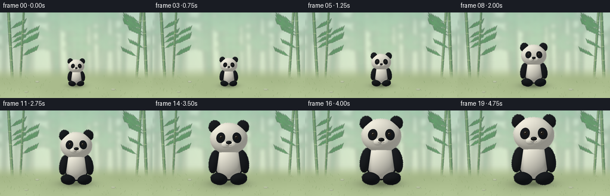
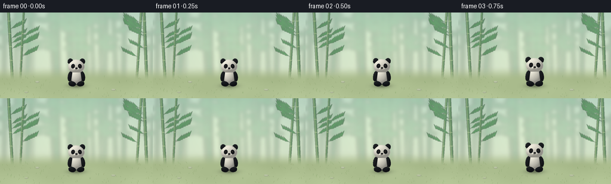

CODING AGENTS AS PIXEL WORLD MODELS
traex/GPT-6.1-Sol · instance_preservation_0045
点击播放 · 原生 RGB 像素
逐轮保存的候选
回放视频、检查图与代码变化。
每份候选均可单独播放。实际图片检查记录在下方工具轨迹中。
候选 01播放与检查图
点击播放 · 原生 RGB 像素


展开代码变化
--- 上一保存版本
+++ 本次保存版本
@@ -0,0 +1,214 @@
+from pathlib import Path
+import json, math
+import numpy as np
+from PIL import Image, ImageDraw, ImageFilter
+from artifact_io import save
+
+ROOT = Path(__file__).resolve().parent
+SPEC = json.loads((ROOT/'task_spec.json').read_text())
+W,H = SPEC['width'], SPEC['height']
+SS=3
+RW,RH = W*SS,H*SS
+rng=np.random.default_rng(29)
+
+# A fixed, softly lit bamboo clearing; all artwork is generated locally.
+yy,xx=np.mgrid[0:RH,0:RW].astype(float)
+x=xx/SS; y=yy/SS
+v=np.clip(y/144,0,1)
+base=np.zeros((RH,RW,3),float)
+for c,(a,b) in enumerate(zip((181,209,191),(221,230,201))):
+ base[:,:,c]=a*(1-v)+b*v
+light=np.exp(-((x-127)/91)**2-((y-42)/60)**2)
+base+=light[:,:,None]*np.array([23,21,13])
+bg=Image.fromarray(np.uint8(np.clip(base,0,255))).convert('RGB')
+forest=Image.new('RGBA',(RW,RH))
+d=ImageDraw.Draw(forest)
+def ellipse(draw, box, fill):
+ draw.ellipse(tuple(int(t*SS) for t in box),fill=fill)
+def line(draw, points, fill, width):
+ draw.line([(int(a*SS),int(b*SS)) for a,b in points],fill=fill,width=max(1,int(width*SS)))
+for i in range(29):
+ bx=float(rng.uniform(-18,278)); wid=float(rng.uniform(2,5))
+ col=(87+int(rng.integers(0,25)),139+int(rng.integers(0,25)),117,90)
+ line(d,[(bx,115),(bx+float(rng.uniform(-9,9)),-8)],col,wid)
+ for by in range(7,109,19):
+ line(d,[(bx-wid/2,by),(bx+wid/2,by)],(145,180,140,85),.6)
+ for j in range(4):
+ lx=bx+float(rng.uniform(-21,21)); ly=float(rng.uniform(-10,62))
+ ellipse(d,(lx-11,ly-3,lx+11,ly+3),(86,144,106,65))
+forest=forest.filter(ImageFilter.GaussianBlur(3.1*SS))
+bg=Image.alpha_composite(bg.convert('RGBA'),forest)
+# Crisp outer bamboo acts as a stable size reference.
+near=Image.new('RGBA',(RW,RH));d=ImageDraw.Draw(near)
+for bx,lean,wid in [(21,-7,4.7),(34,6,3.4),(229,8,4.2),(246,-5,5.1)]:
+ line(d,[(bx,116),(bx+lean,-6)],(82,125,84,210),wid)
+ line(d,[(bx-1,116),(bx+lean-1,-6)],(136,167,105,155),wid*.25)
+ for by in [14,35,57,80,101]:
+ ax=bx+lean*(116-by)/122
+ line(d,[(ax-wid*.5,by),(ax+wid*.5,by)],(185,200,142,175),.7)
+ for j in range(5):
+ by=float(rng.uniform(8,76)); ax=bx+lean*(116-by)/122
+ direction=1 if bx<128 else -1
+ line(d,[(ax,by),(ax+direction*19,by-10)],(74,115,75,185),.7)
+ for k in range(5):
+ lx=ax+direction*(4+k*3.9); ly=by-2-k*1.8
+ verts=[(lx,ly),(lx+direction*9,ly-9),(lx+direction*6,ly-1),(lx,ly)]
+ d.polygon([(int(a*SS),int(b*SS)) for a,b in verts], fill=(70,120+int(rng.integers(0,18)),78,185))
+near=near.filter(ImageFilter.GaussianBlur(.35*SS)); bg=Image.alpha_composite(bg,near)
+# Gently mottled floor without a visible horizon line.
+b=np.asarray(bg.convert('RGB')).astype(float)
+ground=np.clip((y-89)/25,0,1);ground=ground*ground*(3-2*ground)
+gcol=np.zeros_like(b)
+for c,cv in enumerate([171,189,142]):gcol[:,:,c]=cv+(y-116)*.23
+mottle=(np.sin(x*.065+y*.037)+np.cos(y*.14-x*.03))*1.7
+gcol+=mottle[:,:,None]
+b=b*(1-ground[:,:,None])+gcol*ground[:,:,None]
+bg=Image.fromarray(np.uint8(np.clip(b,0,255)))
+d=ImageDraw.Draw(bg)
+for j in range(100):
+ gx=float(rng.uniform(0,256)); gy=float(rng.uniform(108,144))
+ if 86<gx<171 and 108<gy<127: continue
+ length=float(rng.uniform(1.1,3.7))
+ col=(132+int(rng.integers(0,16)),157+int(rng.integers(0,16)),111)
+ line(d,[(gx,gy),(gx+float(rng.uniform(-2,2)),gy-length)],col,.35)
+for box in [(59,115,66,118),(186,128,194,131),(41,133,47,135)]:
+ ellipse(d,box,(160,171,139))
+ ellipse(d,(box[0]+.5,box[1],box[2]-.9,box[3]-1),(187,197,165))
+BACKGROUND=np.asarray(bg).astype(float)
+
+# Analytic, orthographic rendering of the same soft panda at every size.
+# Ellipsoids provide true normals and depth, not flat cutouts.
+shapes=[]
+def shape(name,center,radii,color,rotation=0):
+ a=rotation
+ R=np.array([[math.cos(a),-math.sin(a),0],[math.sin(a),math.cos(a),0],[0,0,1.]])
+ shapes.append((name,np.array(center,float),np.array(radii,float),np.array(color,float),R))
+BLACK=(28,31,34); WHITE=(237,234,219)
+shape('body',(0,.66,-.07),(.465,.565,.33),BLACK)
+shape('belly',(0,.61,.11),(.414,.475,.324),WHITE)
+shape('armL',(-.435,.665,.12),(.164,.355,.235),BLACK,-.19)
+shape('armR',(.435,.665,.12),(.164,.355,.235),BLACK,.19)
+shape('footL',(-.295,.145,.20),(.255,.181,.30),BLACK,-.12)
+shape('footR',(.295,.145,.20),(.255,.181,.30),BLACK,.12)
+shape('earL',(-.424,1.717,.092),(.181,.194,.14),BLACK,-.24)
+shape('earR',(.424,1.717,.092),(.181,.194,.14),BLACK,.24)
+shape('head',(0,1.356,.13),(.562,.479,.393),WHITE)
+shape('muzzleL',(-.092,1.176,.474),(.13,.105,.095),(240,237,222))
+shape('muzzleR',(.092,1.176,.474),(.13,.105,.095),(240,237,222))
+shape('nose',(0,1.243,.562),(.087,.054,.048),(27,29,30))
+# Amber-brown eyes, kept within their black patches.
+for sg in [-1,1]:
+ shape('eye', (sg*.228,1.398,.491),(.045,.047,.030),(65,49,33))
+ shape('pupil',(sg*.228,1.400,.519),(.027,.031,.012),(10,13,14))
+ shape('glint',(sg*.228-.011,1.415,.528),(.010,.012,.006),(247,251,242))
+ shape('tinyglint',(sg*.228+.010,1.389,.530),(.004,.005,.004),(160,177,170))
+
+L=np.array([-.48,.69,.54]);L/=np.linalg.norm(L)
+
+def panda_render(scale,blink=1):
+ # Ground anchor is invariant: the animal grows rather than the camera zooming.
+ X=(xx/SS-128)/scale
+ Y=(123-yy/SS)/scale
+ rayorigin=np.stack([X,Y,np.full_like(X,4)],axis=-1)
+ V=np.array([0.,0.,-1.])
+ depth=np.full(X.shape,1e6)
+ rgb=np.zeros((*X.shape,3),float)
+ owner=np.full(X.shape,-1,int)
+ normals=np.zeros((*X.shape,3),float)
+ positions=np.zeros_like(normals)
+ for si,(name,C,rad,col,R) in enumerate(shapes):
+ O=(rayorigin-C)@R
+ D=V@R
+ A=np.sum((D/rad)**2)
+ B=2*np.sum(O*D/(rad*rad),axis=-1)
+ CC=np.sum((O/rad)**2,axis=-1)-1
+ disc=B*B-4*A*CC
+ t=(-B-np.sqrt(np.maximum(0,disc)))/(2*A)
+ mask=(disc>=0)&(t<depth)
+ if not mask.any():continue
+ P=rayorigin+t[:,:,None]*V
+ loc=(P-C)@R
+ N=(loc/(rad*rad))@R.T
+ N/=np.maximum(np.linalg.norm(N,axis=-1,keepdims=True),1e-9)
+ color=np.broadcast_to(col,(*X.shape,3)).copy()
+ if name=='head':
+ # The asymmetric, tapered eye-patch markings follow the curved face.
+ u=np.abs(P[:,:,0])-.244
+ vv=P[:,:,1]-1.386
+ up=u*.963+vv*.268
+ vp=-u*.268+vv*.963
+ e=(up/.131)**2+(vp/.160)**2
+ edge=np.clip((1.035-e)*35,0,1)
+ edge*=np.clip((P[:,:,2]-.18)*20,0,1)
+ color=color*(1-edge[:,:,None])+np.array([27,30,33])*edge[:,:,None]
+ diffuse=np.maximum(0,np.sum(N*L,axis=-1))
+ # Wrapped lighting and a cool ambient fill keep dark fur readable.
+ illum=.61+.40*diffuse
+ shade=color*illum[:,:,None]
+ shade+=np.maximum(0,N[:,:,0])[:,:,None]*np.array([1.2,2.3,3.6])
+ shade-=np.clip((.45-P[:,:,1]),0,.25)[:,:,None]*10
+ # Stable fine surface fibers, anchored to object-space as it grows.
+ noise=(np.sin(P[:,:,0]*421+P[:,:,1]*117+P[:,:,2]*81)*np.sin(P[:,:,1]*359-P[:,:,2]*271)
+ +.4*np.sin(P[:,:,0]*831-P[:,:,1]*661))
+ fur= 1.4 if name in ['eye','pupil','glint','tinyglint','nose'] else 3.2
+ shade+=noise[:,:,None]*fur
+ if name in ['eye','nose','pupil']:
+ hvec=L+np.array([0,0,1]);hvec/=np.linalg.norm(hvec)
+ spec=np.maximum(0,np.sum(N*hvec,axis=-1))**35
+ shade+=spec[:,:,None]*45
+ # Gentle attachment occlusion around the muzzle and shoulders.
+ if name=='head':
+ oc=np.exp(-((P[:,:,0]/.29)**2+((P[:,:,1]-1.14)/.09)**2))*np.clip((P[:,:,2]-.40)*10,0,1)
+ shade-=oc[:,:,None]*11
+ if name=='belly':
+ oc=np.exp(-((np.abs(P[:,:,0])-.36)/.06)**2)*.15
+ shade*=1-oc[:,:,None]
+ depth[mask]=t[mask];rgb[mask]=shade[mask]
+ normals[mask]=N[mask];positions[mask]=P[mask];owner[mask]=si
+ mask=owner>=0
+ # Soft ground contact shadow expands along with the physical body.
+ shadow=np.exp(-((x-128)/(scale*.50))**2-((y-123)/(scale*.087+1))**2)*.27
+ shadow+=np.exp(-((x-128)/(scale*.67))**2-((y-123)/(scale*.18+1.2))**2)*.12
+ out=BACKGROUND*(1-shadow[:,:,None])
+ out[mask]=np.clip(rgb[mask],0,255)
+ im=Image.fromarray(np.uint8(np.clip(out,0,255)))
+ # Fine groomed fibers at silhouette, in the object's permanent coordinates.
+ draw=ImageDraw.Draw(im)
+ fur_rng=np.random.default_rng(155)
+ for name,C,rad,col,R in shapes:
+ if name not in ['body','belly','head','earL','earR','armL','armR','footL','footR']: continue
+ count=430 if name=='head' else 160
+ for a in fur_rng.uniform(0,2*np.pi,count):
+ local=np.array([rad[0]*math.cos(a),rad[1]*math.sin(a),0])
+ P=C+R@local
+ px=(128+P[0]*scale)*SS;py=(123-P[1]*scale)*SS
+ ix=int(px);iy=int(py)
+ if not(1<=ix<RW-1 and 1<=iy<RH-1):continue
+ # Only visible outer boundaries get silhouette hair.
+ if mask[iy-1:iy+2,ix-1:ix+2].all():continue
+ vec=R@np.array([math.cos(a),math.sin(a),0.])
+ fl=float(fur_rng.uniform(.004,.014))*scale*SS
+ light=max(0,float(np.dot(vec,L)))
+ cc=np.clip(col*(.7+.32*light)+4,0,255).astype(int)
+ draw.line([(px-vec[0]*.7,py+vec[1]*.7),(px+vec[0]*fl,py-vec[1]*fl)],fill=tuple(cc),width=1)
+ # Delicate short mouth beneath the shiny nose, with an easygoing expression.
+ def project(u,v):return ((128+u*scale)*SS,(123-v*scale)*SS)
+ pts=[project(0,1.207),project(0,1.170)]
+ draw.line(pts,fill=(53,48,43),width=max(1,round(scale*.010*SS)))
+ for sg in [-1,1]:
+ points=[]
+ for t in np.linspace(0,1,30):
+ u=sg*(.085*t); vv=1.169-.018*math.sin(t*math.pi)
+ points.append(project(u,vv))
+ draw.line(points,fill=(58,50,45),width=max(1,round(scale*.008*SS)))
+ return np.asarray(im.resize((W,H),Image.Resampling.LANCZOS))
+
+frames=[]
+for i in range(SPEC['frames']):
+ # A brief small-panda hold, smooth uniform growth, then a big-panda hold.
+ t=np.clip((i-1)/17,0,1)
+ smooth=t*t*(3-2*t)
+ scale=23.8+37.1*smooth
+ frames.append(panda_render(scale))
+save(np.stack(frames).astype(np.uint8),ROOT)
+print(f'Saved {len(frames)} RGB frames at {W}x{H}.')
可观测工具轨迹
实际执行的命令与返回图片。
命令 1exit 0
/bin/bash -lc 'ls -la && cat prompt.txt && cat GENERATION_RULES.md && cat task_spec.json'
命令 2exit 0
/bin/bash -lc 'cat artifact_io.py'
命令 3exit 0
/bin/bash -lc 'command -v ffmpeg || true'
命令 4exit 0
/bin/bash -lc "cat > generate.py <<'PY'
from pathlib import Path
import json, math
import numpy as np
from PIL import Image, ImageDraw, ImageFilter
from artifact_io import save
ROOT = Path(__file__).resolve().parent
SPEC = json.loads((ROOT/'task_spec.json').read_text())
W,H = SPEC['width'], SPEC['height']
SS=3
RW,RH = W*SS,H*SS
rng=np.random.default_rng(29)
# A fixed, softly lit bamboo clearing; all artwork is generated locally.
yy,xx=np.mgrid[0:RH,0:RW].astype(float)
x=xx/SS; y=yy/SS
v=np.clip(y/144,0,1)
base=np.zeros((RH,RW,3),float)
for c,(a,b) in enumerate(zip((181,209,191),(221,230,201))):
base[:,:,c]=a*(1-v)+b*v
light=np.exp(-((x-127)/91)**2-((y-42)/60)**2)
base+=light[:,:,None]*np.array([23,21,13])
bg=Image.fromarray(np.uint8(np.clip(base,0,255))).convert('RGB')
forest=Image.new('RGBA',(RW,RH))
d=ImageDraw.Draw(forest)
def ellipse(draw, box, fill):
draw.ellipse(tuple(int(t*SS) for t in box),fill=fill)
def line(draw, points, fill, width):
draw.line([(int(a*SS),int(b*SS)) for a,b in points],fill=fill,width=max(1,int(width*SS)))
for i in range(29):
bx=float(rng.uniform(-18,278)); wid=float(rng.uniform(2,5))
col=(87+int(rng.integers(0,25)),139+int(rng.integers(0,25)),117,90)
line(d,[(bx,115),(bx+float(rng.uniform(-9,9)),-8)],col,wid)
for by in range(7,109,19):
line(d,[(bx-wid/2,by),(bx+wid/2,by)],(145,180,140,85),.6)
for j in range(4):
lx=bx+float(rng.uniform(-21,21)); ly=float(rng.uniform(-10,62))
ellipse(d,(lx-11,ly-3,lx+11,ly+3),(86,144,106,65))
forest=forest.filter(ImageFilter.GaussianBlur(3.1*SS))
bg=Image.alpha_composite(bg.convert('RGBA'),forest)
# Crisp outer bamboo acts as a stable size reference.
near=Image.new('RGBA',(RW,RH));d=ImageDraw.Draw(near)
for bx,lean,wid in [(21,-7,4.7),(34,6,3.4),(229,8,4.2),(246,-5,5.1)]:
line(d,[(bx,116),(bx+lean,-6)],(82,125,84,210),wid)
line(d,[(bx-1,116),(bx+lean-1,-6)],(136,167,105,155),wid*.25)
for by in [14,35,57,80,101]:
ax=bx+lean*(116-by)/122
line(d,[(ax-wid*.5,by),(ax+wid*.5,by)],(185,200,142,175),.7)
for j in range(5):
by=float(rng.uniform(8,76)); ax=bx+lean*(116-by)/122
direction=1 if bx<128 else -1
line(d,[(ax,by),(ax+direction*19,by-10)],(74,115,75,185),.7)
for k in range(5):
lx=ax+direction*(4+k*3.9); ly=by-2-k*1.8
verts=[(lx,ly),(lx+direction*9,ly-9),(lx+direction*6,ly-1),(lx,ly)]
d.polygon([(int(a*SS),int(b*SS)) for a,b in verts], fill=(70,120+int(rng.integers(0,18)),78,185))
near=near.filter(ImageFilter.GaussianBlur(.35*SS)); bg=Image.alpha_composite(bg,near)
# Gently mottled floor without a visible horizon line.
b=np.asarray(bg.convert('RGB')).astype(float)
ground=np.clip((y-89)/25,0,1);ground=ground*ground*(3-2*ground)
gcol=np.zeros_like(b)
for c,cv in enumerate([171,189,142]):gcol[:,:,c]=cv+(y-116)*.23
mottle=(np.sin(x*.065+y*.037)+np.cos(y*.14-x*.03))*1.7
gcol+=mottle[:,:,None]
b=b*(1-ground[:,:,None])+gcol*ground[:,:,None]
bg=Image.fromarray(np.uint8(np.clip(b,0,255)))
d=ImageDraw.Draw(bg)
for j in range(100):
gx=float(rng.uniform(0,256)); gy=float(rng.uniform(108,144))
if 86<gx<171 and 108<gy<127: continue
length=float(rng.uniform(1.1,3.7))
col=(132+int(rng.integers(0,16)),157+int(rng.integers(0,16)),111)
line(d,[(gx,gy),(gx+float(rng.uniform(-2,2)),gy-length)],col,.35)
for box in [(59,115,66,118),(186,128,194,131),(41,133,47,135)]:
ellipse(d,box,(160,171,139))
ellipse(d,(box[0]+.5,box[1],box[2]-.9,box[3]-1),(187,197,165))
BACKGROUND=np.asarray(bg).astype(float)
# Analytic, orthographic rendering of the same soft panda at every size.
# Ellipsoids provide true normals and depth, not flat cutouts.
shapes=[]
def shape(name,center,radii,color,rotation=0):
a=rotation
R=np.array([[math.cos(a),-math.sin(a),0],[math.sin(a),math.cos(a),0],[0,0,1.]])
shapes.append((name,np.array(center,float),np.array(radii,float),np.array(color,float),R))
BLACK=(28,31,34); WHITE=(237,234,219)
shape('body',(0,.66,-.07),(.465,.565,.33),BLACK)
shape('belly',(0,.61,.11),(.414,.475,.324),WHITE)
shape('armL',(-.435,.665,.12),(.164,.355,.235),BLACK,-.19)
shape('armR',(.435,.665,.12),(.164,.355,.235),BLACK,.19)
shape('footL',(-.295,.145,.20),(.255,.181,.30),BLACK,-.12)
shape('footR',(.295,.145,.20),(.255,.181,.30),BLACK,.12)
shape('earL',(-.424,1.717,.092),(.181,.194,.14),BLACK,-.24)
shape('earR',(.424,1.717,.092),(.181,.194,.14),BLACK,.24)
shape('head',(0,1.356,.13),(.562,.479,.393),WHITE)
shape('muzzleL',(-.092,1.176,.474),(.13,.105,.095),(240,237,222))
shape('muzzleR',(.092,1.176,.474),(.13,.105,.095),(240,237,222))
shape('nose',(0,1.243,.562),(.087,.054,.048),(27,29,30))
# Amber-brown eyes, kept within their black patches.
for sg in [-1,1]:
shape('eye', (sg*.228,1.398,.491),(.045,.047,.030),(65,49,33))
shape('pupil',(sg*.228,1.400,.519),(.027,.031,.012),(10,13,14))
shape('glint',(sg*.228-.011,1.415,.528),(.010,.012,.006),(247,251,242))
shape('tinyglint',(sg*.228+.010,1.389,.530),(.004,.005,.004),(160,177,170))
L=np.array([-.48,.69,.54]);L/=np.linalg.norm(L)
def panda_render(scale,blink=1):
# Ground anchor is invariant: the animal grows rather than the camera zooming.
X=(xx/SS-128)/scale
Y=(123-yy/SS)/scale
rayorigin=np.stack([X,Y,np.full_like(X,4)],axis=-1)
V=np.array([0.,0.,-1.])
depth=np.full(X.shape,1e6)
rgb=np.zeros((*X.shape,3),float)
owner=np.full(X.shape,-1,int)
normals=np.zeros((*X.shape,3),float)
positions=np.zeros_like(normals)
for si,(name,C,rad,col,R) in enumerate(shapes):
O=(rayorigin-C)@R
D=V@R
A=np.sum((D/rad)**2)
B=2*np.sum(O*D/(rad*rad),axis=-1)
CC=np.sum((O/rad)**2,axis=-1)-1
disc=B*B-4*A*CC
t=(-B-np.sqrt(np.maximum(0,disc)))/(2*A)
mask=(disc>=0)&(t<depth)
if not mask.any():continue
P=rayorigin+t[:,:,None]*V
loc=(P-C)@R
N=(loc/(rad*rad))@R.T
N/=np.maximum(np.linalg.norm(N,axis=-1,keepdims=True),1e-9)
color=np.broadcast_to(col,(*X.shape,3)).copy()
if name=='head':
# The asymmetric, tapered eye-patch markings follow the curved face.
u=np.abs(P[:,:,0])-.244
vv=P[:,:,1]-1.386
up=u*.963+vv*.268
vp=-u*.268+vv*.963
e=(up/.131)**2+(vp/.160)**2
edge=np.clip((1.035-e)*35,0,1)
edge*=np.clip((P[:,:,2]-.18)*20,0,1)
color=color*(1-edge[:,:,None])+np.array([27,30,33])*edge[:,:,None]
diffuse=np.maximum(0,np.sum(N*L,axis=-1))
# Wrapped lighting and a cool ambient fill keep dark fur readable.
illum=.61+.40*diffuse
shade=color*illum[:,:,None]
shade+=np.maximum(0,N[:,:,0])[:,:,None]*np.array([1.2,2.3,3.6])
shade-=np.clip((.45-P[:,:,1]),0,.25)[:,:,None]*10
# Stable fine surface fibers, anchored to object-space as it grows.
noise=(np.sin(P[:,:,0]*421+P[:,:,1]*117+P[:,:,2]*81)*np.sin(P[:,:,1]*359-P[:,:,2]*271)
+.4*np.sin(P[:,:,0]*831-P[:,:,1]*661))
fur= 1.4 if name in ['eye','pupil','glint','tinyglint','nose'] else 3.2
shade+=noise[:,:,None]*fur
if name in ['eye','nose','pupil']:
hvec=L+np.array([0,0,1]);hvec/=np.linalg.norm(hvec)
spec=np.maximum(0,np.sum(N*hvec,axis=-1))**35
shade+=spec[:,:,None]*45
# Gentle attachment occlusion around the muzzle and shoulders.
if name=='head':
oc=np.exp(-((P[:,:,0]/.29)**2+((P[:,:,1]-1.14)/.09)**2))*np.clip((P[:,:,2]-.40)*10,0,1)
shade-=oc[:,:,None]*11
if name=='belly':
oc=np.exp(-((np.abs(P[:,:,0])-.36)/.06)**2)*.15
shade*=1-oc[:,:,None]
depth[mask]=t[mask];rgb[mask]=shade[mask]
normals[mask]=N[mask];positions[mask]=P[mask];owner[mask]=si
mask=owner>=0
# Soft ground contact shadow expands along with the physical body.
shadow=np.exp(-((x-128)/(scale*.50))**2-((y-123)/(scale*.087+1))**2)*.27
shadow+=np.exp(-((x-128)/(scale*.67))**2-((y-123)/(scale*.18+1.2))**2)*.12
out=BACKGROUND*(1-shadow[:,:,None])
out[mask]=np.clip(rgb[mask],0,255)
im=Image.fromarray(np.uint8(np.clip(out,0,255)))
# Fine groomed fibers at silhouette, in the object's permanent coordinates.
draw=ImageDraw.Draw(im)
fur_rng=np.random.default_rng(155)
for name,C,rad,col,R in shapes:
if name not in ['body','belly','head','earL','earR','armL','armR','footL','footR']: continue
count=430 if name=='head' else 160
for a in fur_rng.uniform(0,2*np.pi,count):
local=np.array([rad[0]*math.cos(a),rad[1]*math.sin(a),0])
P=C+R@local
px=(128+P[0]*scale)*SS;py=(123-P[1]*scale)*SS
ix=int(px);iy=int(py)
if not(1<=ix<RW-1 and 1<=iy<RH-1):continue
# Only visible outer boundaries get silhouette hair.
if mask[iy-1:iy+2,ix-1:ix+2].all():continue
vec=R@np.array([math.cos(a),math.sin(a),0.])
fl=float(fur_rng.uniform(.004,.014))*scale*SS
light=max(0,float(np.dot(vec,L)))
cc=np.clip(col*(.7+.32*light)+4,0,255).astype(int)
draw.line([(px-vec[0]*.7,py+vec[1]*.7),(px+vec[0]*fl,py-vec[1]*fl)],fill=tuple(cc),width=1)
# Delicate short mouth beneath the shiny nose, with an easygoing expression.
def project(u,v):return ((128+u*scale)*SS,(123-v*scale)*SS)
pts=[project(0,1.207),project(0,1.170)]
draw.line(pts,fill=(53,48,43),width=max(1,round(scale*.010*SS)))
for sg in [-1,1]:
points=[]
for t in np.linspace(0,1,30):
u=sg*(.085*t); vv=1.169-.018*math.sin(t*math.pi)
points.append(project(u,vv))
draw.line(points,fill=(58,50,45),width=max(1,round(scale*.008*SS)))
return np.asarray(im.resize((W,H),Image.Resampling.LANCZOS))
frames=[]
for i in range(SPEC['frames']):
# A brief small-panda hold, smooth uniform growth, then a big-panda hold.
t=np.clip((i-1)/17,0,1)
smooth=t*t*(3-2*t)
scale=23.8+37.1*smooth
frames.append(panda_render(scale))
save(np.stack(frames).astype(np.uint8),ROOT)
print(f'Saved {len(frames)} RGB frames at {W}x{H}.')
PY
python generate.py"命令 5exit 0
/bin/bash -lc "python - <<'PY'
import numpy as np
from pathlib import Path
from PIL import Image
p=np.load('pixels.npz')['pixels']
assert p.shape == (144,256,20)
f=sorted(Path('frames').glob('*.png'))
assert len(f)==20
assert all(Image.open(x).size==(256,144) and Image.open(x).mode=='RGB' for x in f)
assert all(Path(x).is_file() for x in ['index.html','inspection.png','transition_check.png','generate.py'])
print('Validated 20 RGB frames, 256Ã144, and all required output artifacts.')
PY"保存候选 1 份；完成命令 5 次；可验证图片返回 0 张。原始 API 响应与完整日志保留在本地。